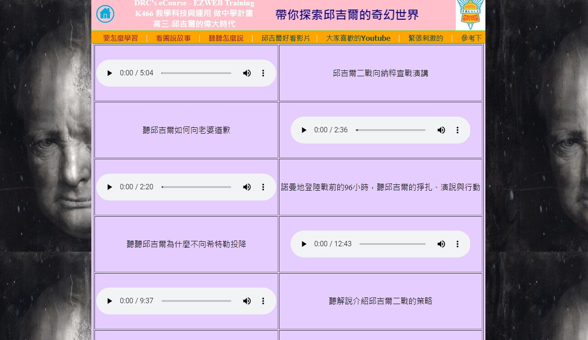
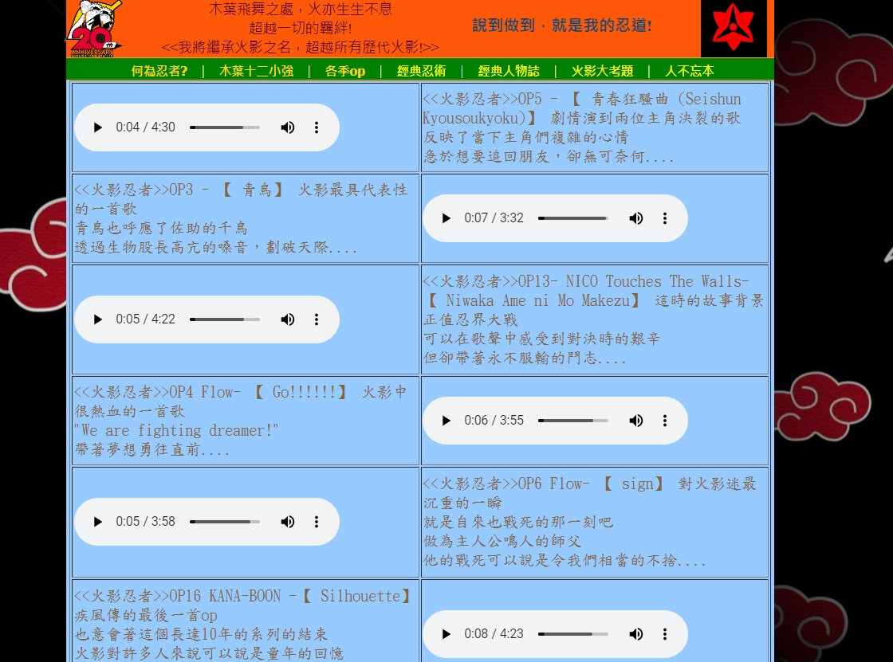

3.html, 用 記事本/notepad，以原始碼編輯
#3 page 自有音文講義 (音文並存)
自錄的音檔(or from GAI)，一律採用 .mp3 格式
需聲音內容對位，以音檔展現概念，用文字說明敘事，4X2
Your browser does not support the audio element.
編碼解析: audio controls autoplay + source src="audio/test1.mp3" type="audio/mp3"

